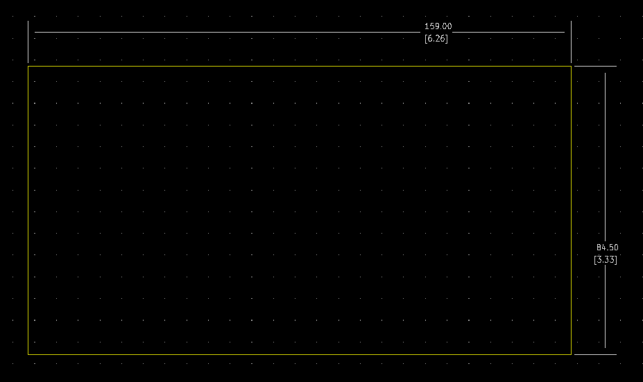

Project template containing the recommended board layout for Hammond Manufacturing 1455ZT160:
Black: 1455ZT1601BK - HM3082-ND
Natural: 1455ZT1601 - HM3083-ND
Features:
- Designed to house electronics for equipment interfacing where shelf or wall mounting is required.
- Consists of an aluminum "U" shaped extrusion body and a slide-in flat aluminum bottom plate.
- Slide-in plate perfect for easy mounting of components.
- Steel foot "L" brackets are attached to each end. "L" brackets are punched with 0.31" (7.9 mm) diameter keyholes for easy mounting of enclosure.
- Rugged body constructed from extruded aluminum with a minimum thickness of .06” (1.5 mm).
- Includes all assembly hardware.
The "Dwgs.User" layer contains all critical dimmensions in milimeters[inches].
The "Edge.Cuts" layer contains the maximum board outline and holes to align with board standoffs.
PCB Preview:
